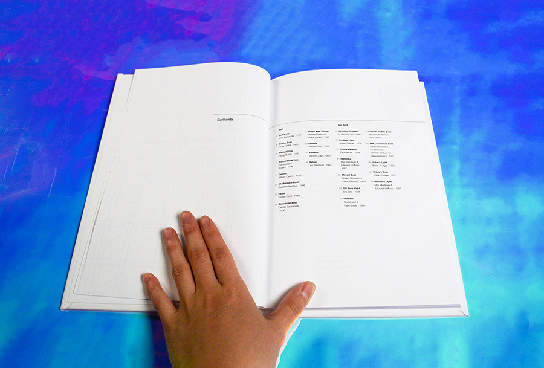
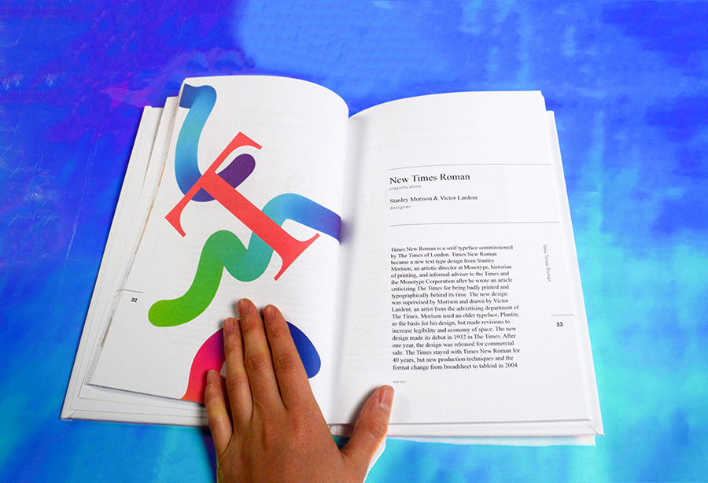
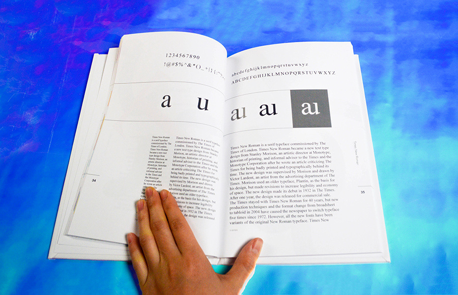
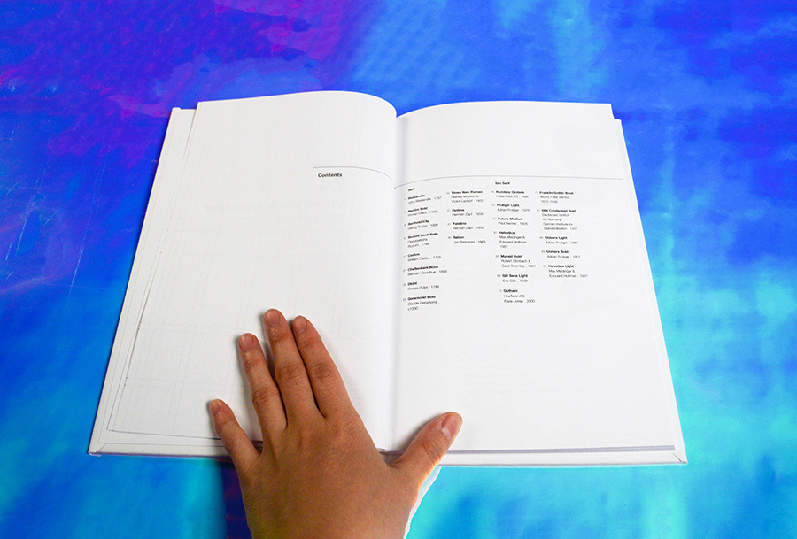
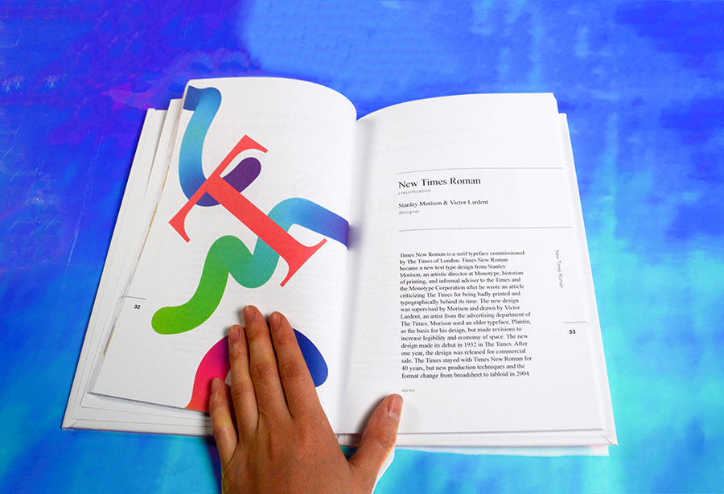
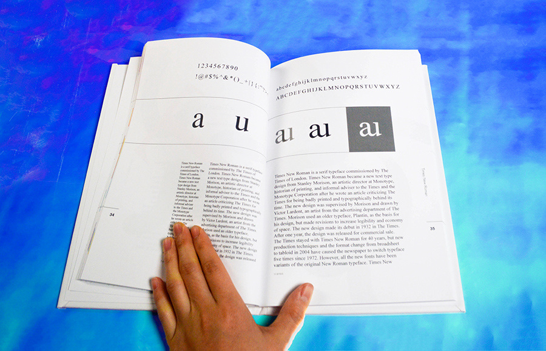

24 Logotypes & Typefaces
How do I create a system where I can create meaningful connections between two letters of the same typefaces? For the inside covers, what kind of visual do I want to create for the readers? I designed logotypes and inside covers and wrote 2 essays for Gill Sans and Palatino.
Type: Book Design
Date: Fall 2017
Focus: Logotypes & Typefaces
Tools: InDesign, Illustrator
 




